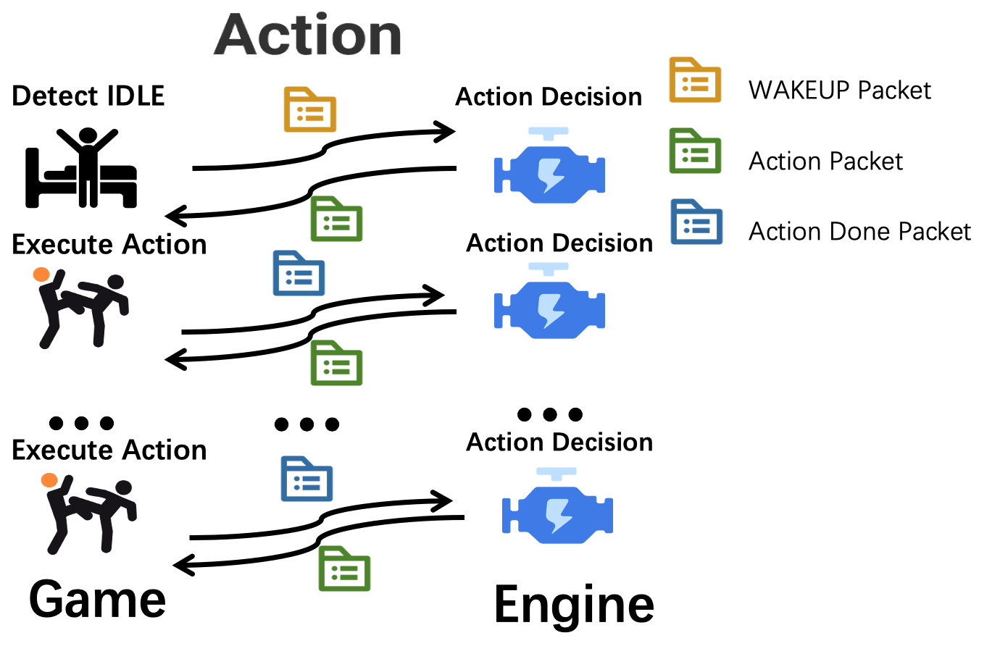

NPC Action模块简述
 NPC不会开始自主行动，除非你发送了wakeup包给它。 npc-engine接到wakeup包之后，会返回action行为数据包。 游戏端需要执行对应action，执行最终状态以action_done包的形式返回给npc-engine, engine接收到action_done包之后会继续返回action行为包。
Action模块UDP请求例
wakeup包例：
# wakeup包例：
{
"func":"wake_up",
"npc_name": "王大妈",
"scenario_name": "李大爷家",
"npc_state": {
"position": "李大爷家卧室",
"observation": {
"people": ["李大爷", "村长", "李飞飞"],
"items": ["椅子#1","椅子#2","椅子#3[李大爷占用]","床"],
"locations": ["李大爷家大门","李大爷家后门","李大爷家院子"]
},
"backpack":["优质西瓜", "大砍刀", "黄金首饰"]
},
"time": "2021-01-01 12:00:00", # 游戏世界的时间戳
}
action_done包例：
# action_done包例
{
"func":"action_done",
"npc_name":"王大妈",
"status": "success",
"time": "2021-01-01 12:00:00", # 游戏世界的时间戳
"scenario_name": "李大爷家",
"npc_state": {
"position": "李大爷家卧室",
"observation": {
"people": ["李大爷", "村长", "李飞飞"],
"items": ["椅子#1","椅子#2","椅子#3[李大爷占用]","床"],
"locations": ["李大爷家大门","李大爷家后门","李大爷家院子"]
},
"backpack":["优质西瓜", "大砍刀", "黄金首饰"]
},
"action":"mov",
"object":"李大爷家", # 之前传过来的动作对象
"parameters":[], # 之前传过来的参数
"reason": "", # "王大妈在去往‘警察局’的路上被李大爷打断"
}
Action模块响应数据包例
# action_done、wakeup发给游戏包后返回的ACTION包
{
"name":"action",
"npc_name":"李大妈",
"action":"mov",
"object":"李大爷家",
"parameters":[],
}